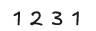
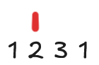
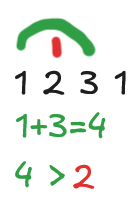
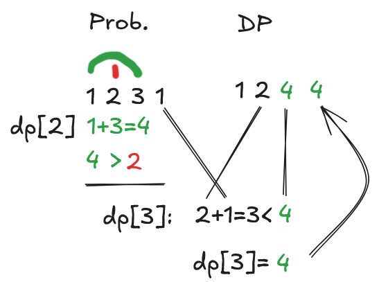
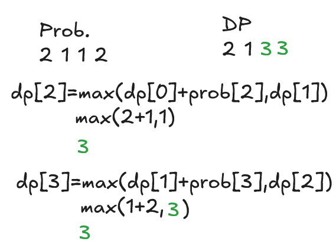
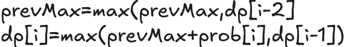
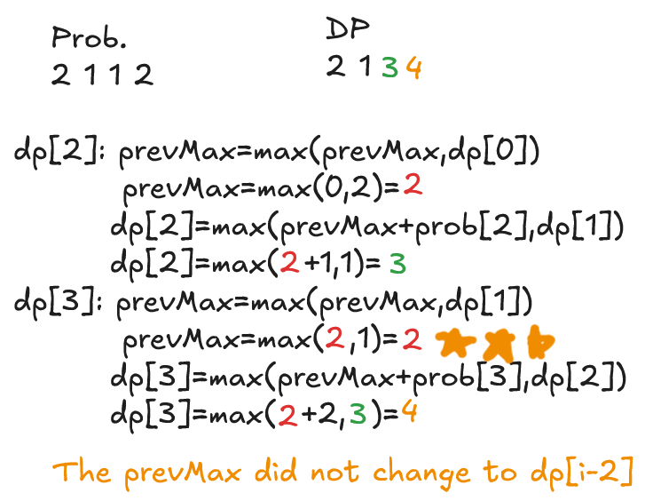

House Robber is a great intro to a common leetcode DP pattern. As the question states, we need to pick an optimal set of values, such that no values are adjacent. Let's start by looking at 2 cases:

We can rob either 1 or 2, 2 is larger, so let's pick that.

Now we are at 3, we want to rob 3, but that means we were wrong to pick 2, since 1 is adjacent! How can we evaluate each non trivial answer? Let's try asking, for each non trivial (first two) case, would we like to rob this house, or would we prefer to have robbed the previous house?
Now, for 3, rather than greedily picking 2, we check, do we want to rob 3, or two? Not only that, but if we rob 3, we now have the option of robbing 1 as well! Meaning, in the resulting DP array, we can pick 1 and 3, or 2.

Great, now for the last item, we see 1. We can ask the same question, better to rob this house? Or better to have followed the route for the previous house?

So, our answer is 4, when we evaluate the last house, the optimal route is to rob houses [0] and [2]
We can formalize this, but there is one other concern. The previous best route may not necessarily be at dp[i-2] consider:

This is incorrect. The reason why is that when we evaluate dp[3], we are not evaluating the optimal path where we rob the current house, represented by dp[i-2]. In this case, the optimal path is actually the first and last house.
So what do we do? We can't evaluate every element of dp every time, that would be brute force. We keep a maximum of the optimal path, up to dp[i-2]. I did this via the following:

Essentially, if we're trying to make sure we look at the most optimal path which involves robbing the house, we should look at dp[i-2], but if it's not larger than some previous dp[i-2], we don't take that path. Let's try 2112 again now, with our new recurrence relationship:

Thus, by checking if dp[i-2] is actually the optimal path which includes robbing this house, we can catch corner cases where dp[i-2] is not optimal, while still keeping all the cases where it is. (dp[i-2] just would always become prevMax).
This gives us an O(n) solution, as we only iterate through the input once.